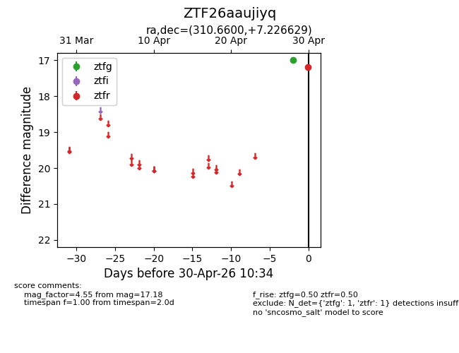
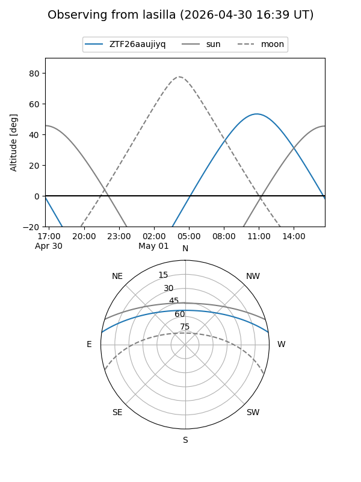
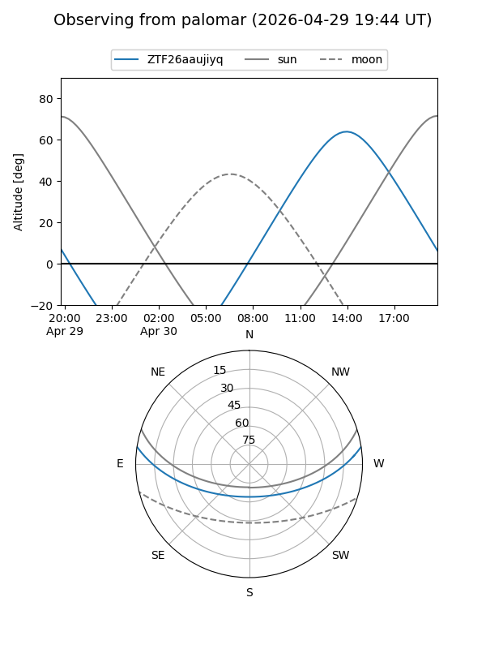
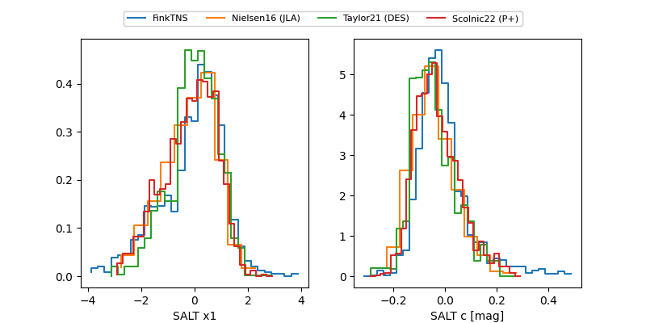

ZTF26aaujiyq
Target ZTF26aaujiyq at 2026-04-30 10:39
Aliases and brokers:
FINK: link
Lasair: link
ALeRCE: link
alt names
ZTF26aaujiyq (ztf,fink_ztf)
Coordinates:
equatorial (ra, dec) = 310.6600,+7.22663
equatorial (HMS+DMS) = 20:42:38.40,+07:13:35.86
galactic (l, b) = (53.1353,-20.75842)
Flags:
Photometry:
last ztfg=17.00, ztfr=17.18
1 ztfg, 1 ztfr detections
Lightcurve

Visibility


Additional plots
